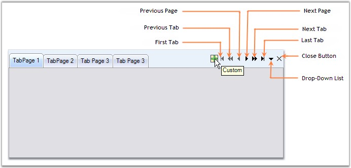
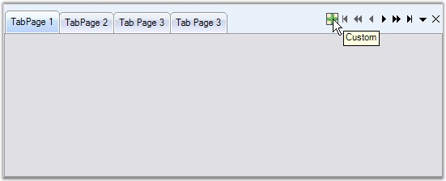

TabPrimitives is a collection of NavigationControls used to navigate through the TabPages of the TabControlAdv.
The various TabPrimitives are,
· FirstTab - Goes to the first tab among the pages.
· LastTab - Goes to the last tab among the pages.
· PreviousTab - Goes to the previous tab of the active tab.
· NextTab - Goes to the next tab of the active tab.
· PreviousPage - Goes to the previous page of the active page.
· NextPage - Goes to the next page of the active page.
· DropDown - This pops-up a list of the available tabpages in the control from which the user can select the page to be traversed.
· Close - This button is used to close the TabControlAdv. It can be set to appear for the whole control or individual tabpages.
· Custom - User can add more buttons through Custom TabPrimitive. This helps the user to create / add more buttons and handle their own click events.

Figure 1046: TabPrimitives
 Note: The TabControlAdv.HitTestTabs()
method can be used to return the tab at the specified location.
Note: The TabControlAdv.HitTestTabs()
method can be used to return the tab at the specified location.
TabPrimitives Features
Apart from doing the defined task of Navigation, TabPrimitivesHost comes with options for adding Images, ToolTips and enabling the Visible property for each TabPrimitive.

Figure 1047: TabPrimitives Features
Note: You can set the other properties for
adding Images and ToolTips for the TabPrimitives using the TabPrimitives
Collection Editor.
ToolTips feature is available for TabPrimitives.
 Creating
TabPrimitives
Creating
TabPrimitives